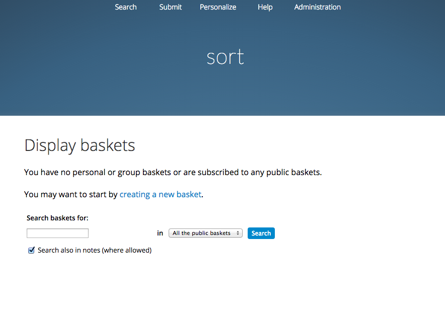
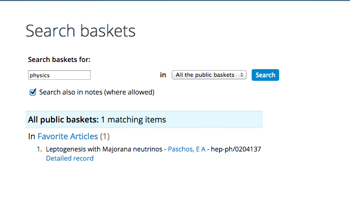
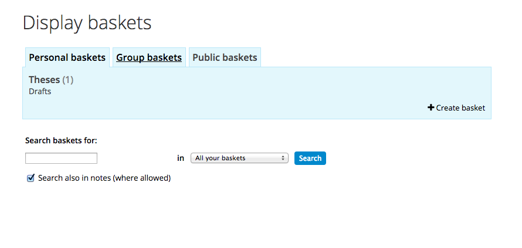

Manage baskets¶
Invenio features a function which allows users to store content of interest in a personal basket. A user can export the content from the basket in the regular export formats, create RSS feeds, or share the content by sharing the basket in a group or by making the basket publicly available for all users.
1. Create a personal basket¶
A user’s personal basket is found in the menu “Personalize”.

New users have no baskets, and they have to start by creating a new one.

The user is asked to create a topic and a basket. Topic and baskets follow a mother-child hierarchy, where there can be several baskets in one topic.

In this example, two baskets have been added to the topic “Physics”, - “Favorite Articles” and “Preprints”.

2. Add content to basket¶
New content is added from the search interface by selecting the records of interests and click the “Add to basket” button.

The user selects which basket the content should be stored in, and write an optional note. The note can be personal or public, dependent on the status of the basket.

The user will now see the three records in his/ her basket.

3. Make your basket public available¶
By selecting the button “edit basket” you are able to change the name, topic and manage group or public sharing rights.

The user makes the basket public by changing the global sharing rights from “No rights” to “View record”. Selecting the sub-choices “view comments” or “view comments and add comments” gives the public additional rights accordingly.
When the basket is made publicly accesible, a link to the url is found in the bottom left corner. This url is persistent and can be shared with friends and colleagues.

4. Subscribe for other users’ public baskets¶
A person can get access to another users public basket by either been handed the url, or by searching in the search interface of the basket module. The user will then search in the metadata of the content.

By clicking on the name of the basket, the user are sent to the public site for that basket.
The user can now choose to subscribe for the basket itself, or set up a RSS feed based on the content in the basket.

If the user select to subscribe for the basket, the user have access to it through basket, under the tab “Public baskets”.

5. Share the basket in a group¶
As described in section 3, the user can manage the sharing rights by clicking the button “edit basket”.
Select “Add group” and select the group your want to share the basket with.

After selecting the group, the user can select the group members sharing rights for the basket.

The basket is now moved from the “Personal basket” tab to the “Group Basket” Tab
